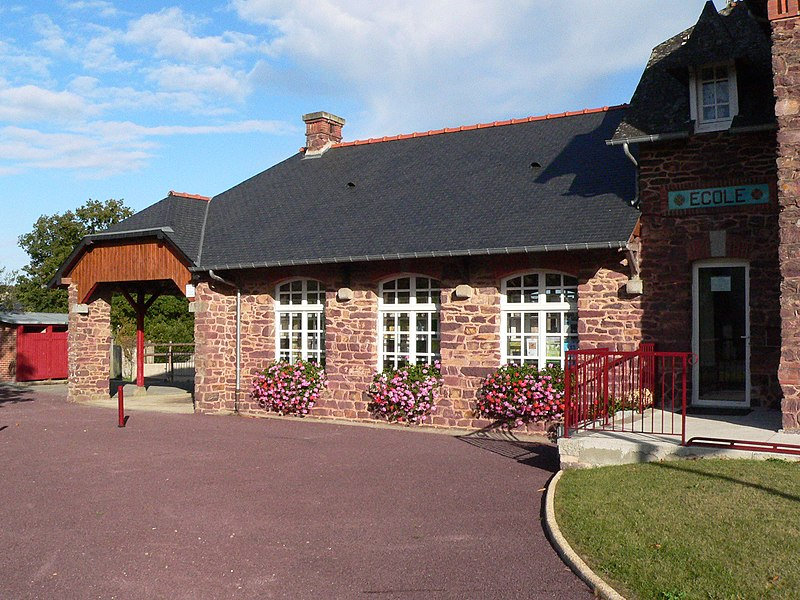

La maison d'école de Saint-Gonlay est une ancienne école publique construite en 1904 Ce lieu sert de cadre aux thèmes liés à l'école mais aussi à l'enfance ; en effet, des films ont été tournés dans l'ancienne salle de classe grâce à des témoignages d'anciens élèves de cette école et aussi d'autres écoles du pays de Brocéliande les écoliers des années 1950 construisaient eux-mêmes leurs jouets avec les matériaux de leur environnement. Des séances filmées d’animations réalisées dans la campagne du pays de Montfort avec des scolaires permettent de suivre le processus de fabrication des jouets, une activité est mise en place pour que les visiteurs puissent fabriquer eux-mêmes leurs jouets buissoniers.
